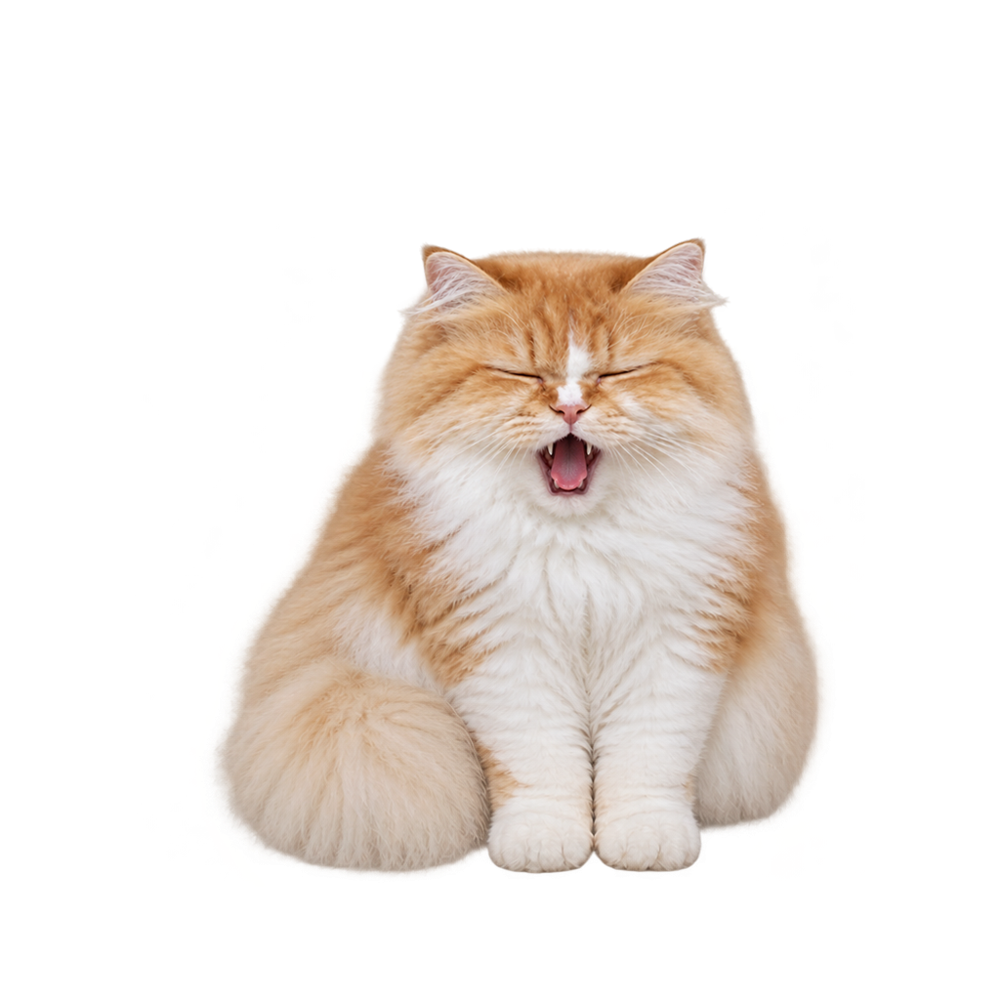

單擊寵物
展開小選單，可進入設定或選擇退出桌面寵物。點擊畫面空白處會收起選單。
How to Use
這裡整理平常最常用的操作。所有偏好會自動保存在目前的 Windows 裝置上。

展開小選單，可進入設定或選擇退出桌面寵物。點擊畫面空白處會收起選單。
快速連按兩下，寵物會用自己的叫聲回應。單擊開設定時不會誤觸聲音。
在設定的「寵物」分頁切換角色、修改名稱與顯示比例，不需要另外按保存。
在「音效與休息」分頁開啟功能並設定間隔。設定視窗開啟時，寵物會停在原位。
連結後會顯示當日近期活動。需要停止時，在「帳號」分頁按下「解除 Google 日曆連結」。
小選單中的退出按鈕會先詢問是否關閉桌面寵物；選擇「是」才會真正結束程式。
常見問題
可以。寵物互動、角色切換、音效與休息提醒都能獨立使用；只有行程提醒需要 Google 日曆授權。
請先確認活動位於 Google 的主要日曆，並且是當日近期活動。也可以在帳號分頁解除連結後重新授權。
寵物會顯示在桌面視窗上方，但透明區域不應阻擋操作。若需要暫時關閉，可從寵物選單選擇退出。
在程式的「帳號」分頁按下解除連結，或前往 Google 帳戶的第三方應用程式與服務頁面移除存取權。
資料安全